Tutorial 3: Dynamic landscapes and movement paths
In this tutorial, we show how to simulate population response to dynamic changes in the landscape. Additionally, we explore possibilities to analyse individual path data from the Stochastic Movement Simulator (SMS) dispersal model and compare different SMS specifications.
To this end, two settings of landscape dynamics are covered:
- Road scenario: a patch-matrix landscape is getting fragmented by the construction of a road
- Land abandonment scenario: a cell-based landscape with continuous shifts in the proportional cover of different land use types
1 Getting started:
1.1 Create a RS directory
First of all, load RangeShiftR and other required packages and set the relative path from your current working directory to the RS directory.
# load packages
library(RangeShiftR)
library(tidyr)
library(ggplot2)
library(raster)
library(rasterVis)
library(gridExtra)
library(RColorBrewer)
# relative path from current working directory:
dirpath = "Tutorial_03/"As already shown in the previous tutorials, we need the three sub-folders ‘Inputs’, ‘Outputs’ and ‘Output_Maps’, which can be created from within R if they don’t exist already:
dir.create(paste0(dirpath,"Inputs"), showWarnings = TRUE)
dir.create(paste0(dirpath,"Outputs"), showWarnings = TRUE)
dir.create(paste0(dirpath,"Output_Maps"), showWarnings = TRUE)Copy the input files provided for exercise 3 into the ‘Inputs’ folder. The files can be downloaded here. All dynamic landscapes from Tutorial 3 were created using the package NLMR (Sciaini et al. 2018) as shown in the appendix.
2 Road scenario
In this scenario, we simulate a patch-matrix landscape that is getting fragmented by the construction of a road. With this example we show some possible ways to analyse the optional SMS paths output.
2.1 Artificial Maps
We created a series of four maps (map_01.asc to map_04.asc) that represent different time steps in which a landscape mosaic of woodland and grassland patches in an agricultural matrix gets increasingly disturbed by woodland clearing and the construction of a road. For the code used to create these habitat maps and their corresponding patch maps, see the appendix.
We choose land type 2 to be the matrix and the others (1,3,4) to be different forms of habitat. The road is denoted by its own code 5 and will be assigned higher dispersal costs. The land types are:
- semi-natural grassland
- arable
- woodland
- improved grassland
- road
Load all habitat maps into R and plot them together:
habitat_maps <- stack(sapply(1:4, FUN=function(n){paste0(dirpath,"Inputs/map_0",n,".asc")}))
mycol_terrain <- c("#D0C096","#E2E2E2","#027C1E","#97A753","dark red")
spplot(habitat_maps,
col.regions=mycol_terrain,
at = 0:5+.5)The patches are defined by cohesive regions of habitat, confined by the matrix. Thus, a patch can be made up of up to three different habitat types. As we have already seen in Tutorial 2, we also need to explicitly define the patch IDs. The patch files should have the same extent and resolution as the habitat map, and each cell contains a unique patch ID that indicates to which patch it belongs. As the patches do not change between habitat maps 3 and 4, we only need three different patch files.
patches <- stack(sapply(1:3, FUN=function(n){paste0(dirpath,"Inputs/patches_0",n,".asc")}))
# Plot the patches in different colours:
spplot(patches, margin=F, scales=list(draw=FALSE), at=0:230, colorkey=F,
col.regions = c('black',rep(brewer.pal(n = 12, name = "Paired"),5)))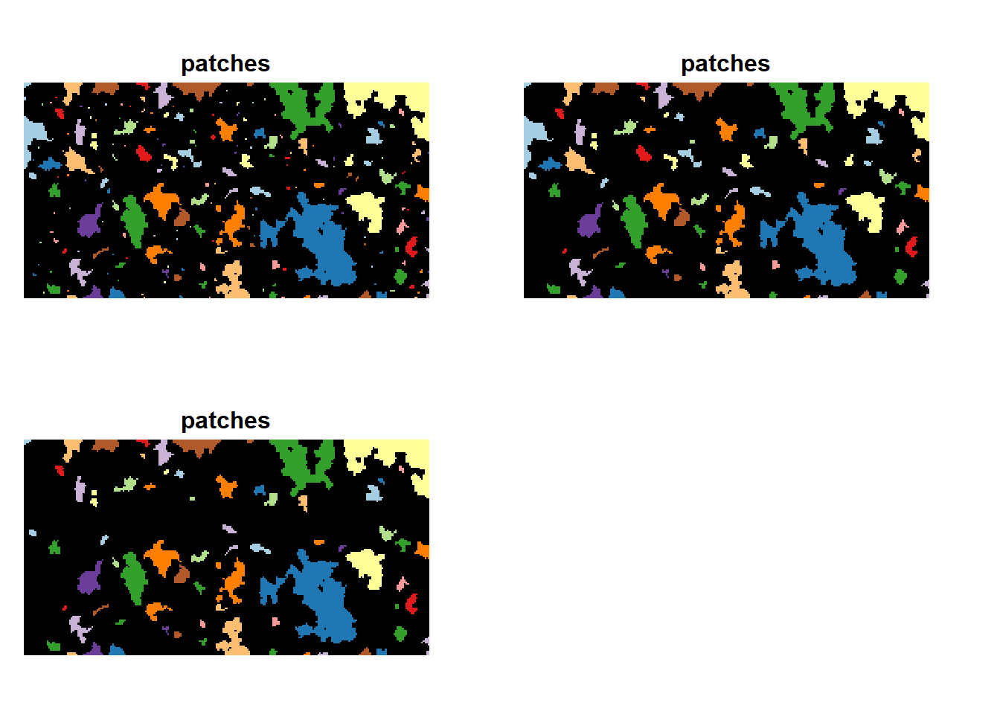
As the last input map, we look at the initial distribution of our model species. According to this map, a few large patches will be initialised at the beginning of the simulation time:
plot(raster(paste0(dirpath,"Inputs/init_dist.asc")))
2.2 RangeShiftR setup
We aim to simulate a population at equilibrium with the environment before road construction starts. Landscape clearing and road construction then increasingly disrupt individual movement in the landscape. In order to set up the simulation, we need to specify the species’ demography parameters, the landscape parameters and the dispersal parameters.
2.2.1 Demographic parameters
We choose to model a long-lived, stage-structured population with four stages and a simple form of mate limitation (ReproductionType = 1). The transition matrix is set up so that new-borns (stage 0) always develop to juveniles (stage 1), meaning that new-born mortality is accounted for within the fecundity. Juveniles (stage 1) do not reproduce and develop to sub-adult (stage 2) quickly, with a rate of ca. 6/7. Sub-adult (stage 2) have a little slower development than juveniles. Only the adults (stage 3) reproduce and have a high survival rate.
( TraMa <- matrix( c(0,1,0,0, 0,.10,.60,0, 0,0,0.2,0.45, 5,0,0,.85), ncol = 4) )## [,1] [,2] [,3] [,4]
## [1,] 0 0.0 0.00 5.00
## [2,] 1 0.1 0.00 0.00
## [3,] 0 0.6 0.20 0.00
## [4,] 0 0.0 0.45 0.85Furthermore, we assume density-dependence in fecundity and survival, where the density dependence in survival is lower than in fecundity (controlled by SurvDensCoeff). Finally, we assume that individuals in patches that get destroyed will not die instantly but will be able to disperse to new patches (controlled by the parameter PostDestructn).
demog <- Demography(ReproductionType = 1,
StageStruct = StageStructure(Stages = 4,
TransMatrix = TraMa,
FecDensDep = T,
SurvDensDep = T,
SurvDensCoeff = 0.4,
PostDestructn = T))2.2.2 Set landscape and explore equilibrium population size
Next, we need to define the landscape object (using ImportedLandscape()). You may remember from the previous tutorials that the strength of density dependence (1/b) is also specified in the landscape object via the argument K_or_DensDep. (Note that K_or_DensDep holds the carrying capacities K in case of a non-structured population and 1/b in case of a stage-structured population, like in this example.)
Specifically, for each land cover type, we need to set 1/b, the strength of density dependence, which will affect the equilibrium population size. To this end, we give a vector to K_or_DensDep that holds the values of 1/b for each land type. Since we’d like to simulate a woodland species we set the lowest density dependence b (i.e. highest 1/b) for forest (land type 3). To characterise the matrix and roads, 1/b is set to 0, denoting non-habitat.
As b affects the equilibrium population size, it will also affect the maximum abundance that we could observe in a patch and stage. To explore the potential effect of b on equilibrium population sizes before running the simulation, we implemented the function getLocalisedEquilPop(). This allows a better understanding of reasonable values of 1/b for the different land types. In fact, the function getLocalisedEquilPop() runs a quick simulation of a closed and localised population (i.e. without dispersal and in a single idealised patch) for a given vector of potential 1/b values (argument DensDep_values) and based on our above defined Demography() module (argument demog).
The getLocalisedEquilPop() function uses absolute values of individuals in the local population (since there is not spatial extent), while what we need are relative values of 1/b as individuals per hectare. We choose to simulate a hypothetical patch of our landscape, and want to determine the value of 1/b that is needed to observe e.g. 100 individuals (let’s assume this corresponds to our empirical observation how many individuals were maximally observed in woodland patches). Thus, we aim to find the 1/b parameter that would yield a maximum local population abundance of 100 individuals. We can now assess the localised equilibrium population size for different values of 1/b and see how the density dependence plays out. By default, the function getLocalisedEquilPop() will output a barplot illustrating the equilibrium population sizes for the different levels of 1/b:
eq_pop <- getLocalisedEquilPop(demog = demog, DensDep_values = seq(50,300,50))Here, a 1/b of roughly 150 would yield the desired result approximately, in a closed and localised population. We choose the slightly higher value, since dispersal losses are not accounted for. We thus assume 1/b=150 for the woodland habitat and lower 1/b for the less suitable grassland patches.
Now, we can specify all parameters in the landscape object, including the file names of the habitat and patch files, and the years in which the different landscapes should be loaded in the simulation. Note that we have to include the patch map 3 twice, in order to match the patch maps with their corresponding habitat maps.
# define in which simulation year the new habitat maps and patch landscape should be loaded:
year_blocks <- c(0,80,110,140)
# explicitly provide the file names to the landscape object:
landnames <- c("map_01.asc","map_02.asc","map_03.asc","map_04.asc")
land <- ImportedLandscape(LandscapeFile = landnames,
PatchFile = c("patches_01.asc","patches_02.asc","patches_03.asc","patches_03.asc"),
DynamicLandYears = year_blocks,
Nhabitats = 5,
Resolution = 10,
K_or_DensDep = c(125,0,150,75,0),
SpDistFile = "init_dist.asc",
SpDistResolution = 10)2.2.3 Dispersal parameters
The next step is to set up the dispersal module. We set a density- and stage-dependent emigration probability, such that only the juvenile and sub-adult stages emigrate. As a transfer method we choose the SMS movement process with a dispersal bias, which gives an individual the preference to move away from its natal patch. The strength of this bias decays with the number of steps taken (controlled by the decay rate AlphaDB and the inflection point BetaDB). In SMS(), the dispersal resistance of each land type is set by the argument Costs, and the constant step mortality is defined by StepMort. The density-dependent emigration probability is defined by the maximum emigration probability and the parameters \(\alpha\) and \(\beta\), all of which are provided as matrix in the argument EmigProb.
The settlement rules include a maximum and minimum number of steps per dispersal event. Furthermore, we use the option to set a maximum number of steps per year (MaxStepsYear). If an individual reaches this limit during dispersal, it halts and waits for the next year to continue its dispersal event, while being subjected to the yearly survival probability of its stage. If, in contrast the individual hits the overall limit on the number of steps, MaxSteps, it dies.
Additionally, we set the mating requirement (FindMate) for settlement. This enables an individual to settle in a given patch only if there is an individual of the opposite sex present.
# density-dependent emigration
disp <- Dispersal(Emigration = Emigration(StageDep = T,
DensDep = T,
EmigProb = cbind(0:3,c(0.55,0.45,0,0), c(5,5,0,0), c(1,1,0,0))),
Transfer = SMS(DP = 1.8, MemSize = 4,
GoalType = 2, GoalBias = 2.5, AlphaDB = .4, BetaDB = 10,
Costs = c(3,5,1,2,30),
StepMort = 0.01),
Settlement = Settlement(MaxSteps = 80, MinSteps = 15, MaxStepsYear = 20,
FindMate = T)
)We can have a look at the dispersal bias and emigration probability we parameterised using the generic function plotProbs().
par(mfrow=c(1,2))
plotProbs(disp@Transfer)
plotProbs(disp@Emigration)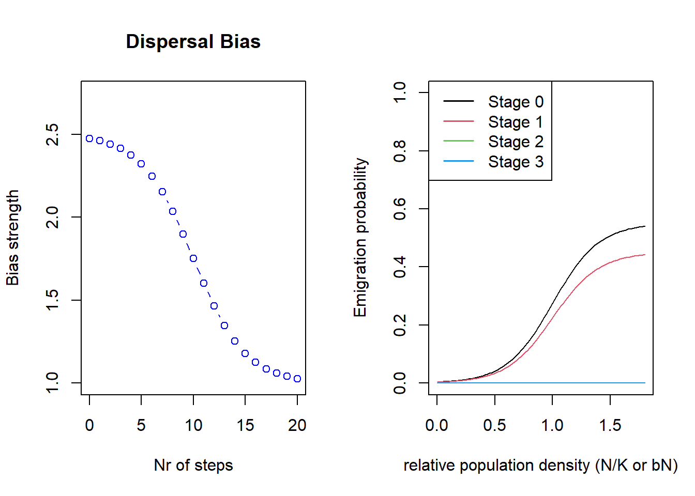
2.2.4 Initialisation
Now we turn to the initial conditions of our simulation. We initialise every patch with the equilibrium density and proportional density of stages that we simulated above with the matrix model (with 1/b=150).
# run again for convenience to get local equilibrium population size
# at target value of 1/b:
eq_pop <- getLocalisedEquilPop(demog = demog, DensDep_values = 150, plot=F)
# calculate proportion of all stages excluding the new-born juvenile (stage 0) population,
# which can't be initialised:
prop_stgs <- eq_pop[-1]/sum(eq_pop[-1])
# we initialise at roughly half the 1/b of the most suitable patch
init <- Initialise(InitType = 1, # from loaded species distribution map (see 'land' module)
SpType = 0, # all presence cells (the default)
InitDens = 2, # initial density: user-defined
IndsHaCell = 75, # initial density in inds/ha
PropStages = c(0,prop_stgs), # initial stage distribution
InitAge = 2) # initial age distribution: quasi-equilibrium (the default).2.2.5 Simulation
Lastly, we set the number of simulated years and replicates as well as the types and temporal intervals of produced output.
We request the population output for every 10 years and the range output for every 5 years.
Since we simulate SMS dispersal, we can enable the paths output to get the individual dispersal trajectories and their step-wise status by setting OutIntPaths> 0. Since this output type can produce large amounts of data when there are many dispersal events taking place, it can be advantageous to start with large intervals or few replicates. The results for each replicate will be stored in a separate file.
Finally, we put together the parameter master with all the settings we have made in this section and a set seed.
simul <- Simulation(Simulation = 1,
Years = 200,
Replicates = 20,
OutIntPop = 10,
OutIntRange = 5,
OutIntPaths = 10)
s <- RSsim(batchnum = 12, seed = 987, land = land, demog = demog, dispersal = disp, init = init, simul = simul)2.2.6 Run RS
Let’s run the RangeShiftR simulation:
RunRS(s, dirpath = dirpath)2.3 Results
2.3.1 Abundance and occupied patches over time
To get a first impression of our simulation results, we look at the time series for total abundance and the number of occupied patches. These functions use the range output; as we set its output interval to 5 years, we get a time series with a temporal resolution of 5 years.
par(mfrow=c(1,2))
plotAbundance(s, dirpath)
plotOccupancy(s, dirpath)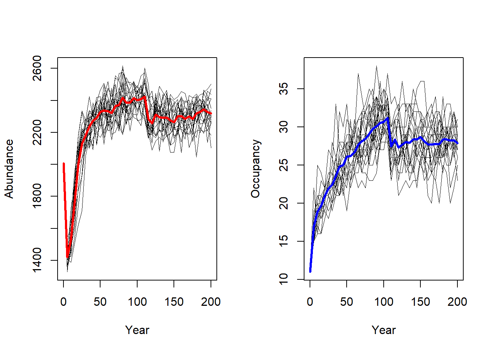
After initialisation, the abundance first drops and then quickly grows to values around 2000 individuals. The mean occupancy plateaus at about 20 patches, but with a large variance.
2.3.2 Occupancy Probability and Time to colonisation
We use the function ColonisationStats() to get the occupancy probabilities at given years as well as the time to colonisation for all patches. With the option maps=T, this function also returns maps to visualise these quantities.
ColonisationStats() uses the population output; as we set its output interval to 10 years, we can only request the results for those years. If we don’t specify a year, the last recorded year is used by default. (In the second scenario below, you can find an example on how to get the occupancy probabilities for given years.)
The function returns a list with the numeric results and the maps:
col <- ColonisationStats(s, dirpath, maps=T)
names(col)## [1] "occ_prob" "col_time" "map_occ_prob" "map_col_time"Let’s plot the mean occupancy probability in the last recorded year, year 200, over all replicates:
plot(col$map_occ_prob)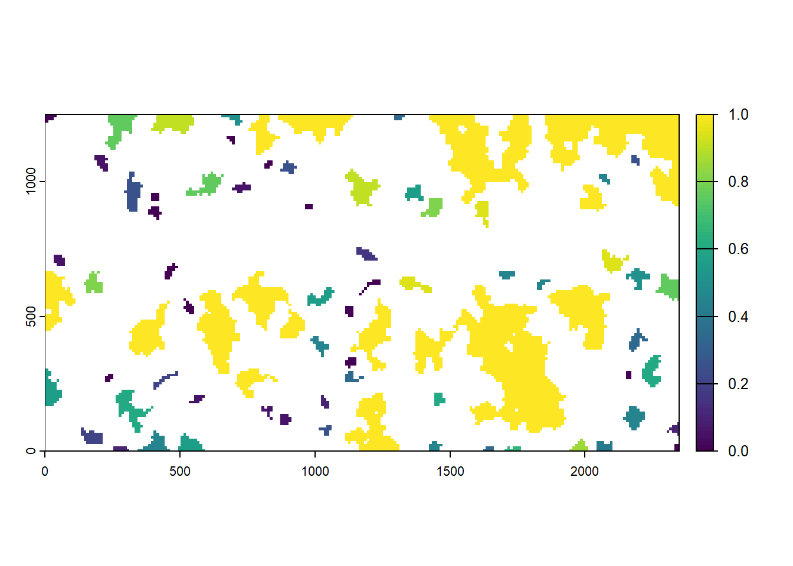
We find that larger patches tend to have a higher probability of being occupied in the last year of a given replicate of our simulation.
Now, let’s also plot the mean time to colonisation for all patches:
plot(col$map_col_time)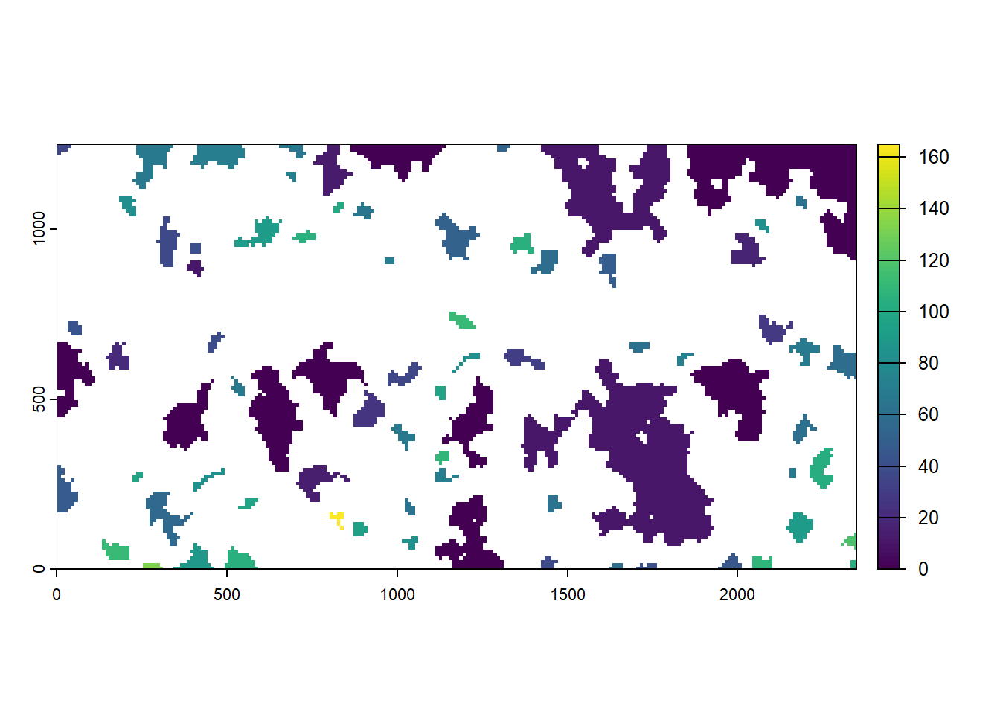
The lighter the color, the earlier a patch was colonised during the simulation. The initial patches appear in light gray and the matrix in white. We find that larger patches tend to get colonised earlier than smaller ones.
2.3.3 Local population densities prior to landscape changes
To get a spatial view of the population, we load the population output that contains information on patch-specific and stage-specific abundance (recorded every 10 years) and map the local population density onto the four different patch maps. We use the last recorded time step before the landscape changes occur.
Since the population output lists the absolute abundances for each patch, larger patches tend to have larger population sizes than smaller ones. To account for this, we divide the abundances by the number of cells in its respective patch to get a population density.
# last recorded time step before the landscape changes:
map_years <- c(70,100,130,190)
# We have already read in the patches earlier:
patches <- patches[[c(1:3,3)]]
# initialise raster stacks for population density
map_pop <- patches
names(map_pop) <- paste('Year',map_years)
values(map_pop)[values(map_pop)==0] <- NA
values(map_pop)[values(map_pop) >0] <- 0
# populate stack with values read from Population output (takes a little while to run...)
pop_df <- readPop(s, dirpath)
for(i in 1:length(map_years)){
# mean NInd per Patch over all replicates
Pop_mean_over_reps <- aggregate(NInd~PatchID, data = subset(pop_df,Year==map_years[i],select=c('Rep','PatchID','NInd')), FUN = mean)
# exclude matrix patch
Pop_mean_over_reps <- Pop_mean_over_reps[Pop_mean_over_reps$PatchID>0,]
# get patch sizes
cell_counts <- data.frame(table(values(patches[[i]])))
Pop_mean_over_reps <- merge(Pop_mean_over_reps, cell_counts, by.x = 'PatchID', by.y = 'Var1')
# assign density values to patch map
for (l in 1:nrow(Pop_mean_over_reps) ) {
values(map_pop[[i]])[values(patches[[i]])==Pop_mean_over_reps[l,'PatchID']] <- (Pop_mean_over_reps[l,'NInd']/Pop_mean_over_reps[l,'Freq'])
}
}
# plot density
spplot(map_pop)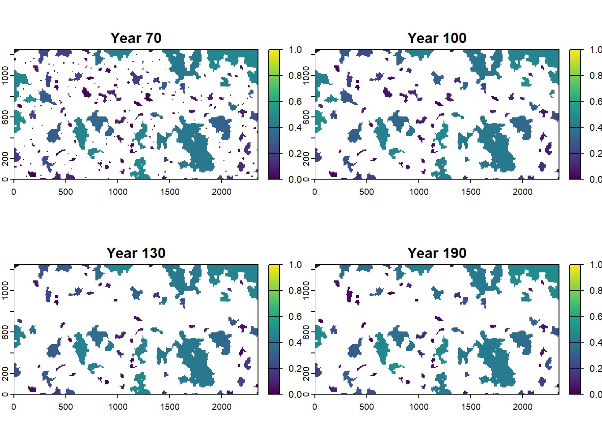
In the present example, we find that larger patches tend to have higher population densities. We encourage you to play around with different modelling assumptions, for example the density dependence in survival and emigration probability and explore the effects on local population densities.
2.3.4 Dispersal outcomes
Now we analyse the SMS paths output. There is a separate output file for each replicate. Let’s look at the paths of the first replicate (note that counting starts at zero):
# read output file
steps <- read.table(paste0(dirpath,"Outputs/Batch12_Sim1_Land1_Rep0_MovePaths.txt"), header = T)
head(steps)## Year IndID Step x y Status
## 1 0 14 0 93 122 0
## 2 0 14 1 92 122 1
## 3 0 21 0 109 124 0
## 4 0 21 1 108 124 1
## 5 0 2008 0 101 122 0
## 6 0 2008 1 101 123 1The SMS paths files list for each output year all currently dispersing individuals with all steps taken by them during this year. From this file we can easily extract how many steps individuals took during dispersal.
# we ask how often a step was logged per individual
hist(c(table(steps$IndID)),xlab='Number of steps',main='Steps per dispersing individual')
We see that many individuals disperse more than 20 steps, meaning that they did not settle within the first year. Quite a few of them even reach the overall maximum number of steps MaxSteps, which is set to 80 in this example.
To reconstruct the individual paths, we need the status information of each step from the last column of the SMS path files. This variable codes for 9 different possible dispersal states:
- in natal patch
- still dispersing
- awaiting settlement in possible suitable patch
- waiting between dispersal events
- completed settlement
- completed settlement in a suitable neighbouring cell
- died during transfer by failing to find a suitable patch (includes exceeding maximum number of steps or crossing absorbing boundary)
- died during transfer by constant, step-dependent, habitat-dependent or distance-dependent mortality
- died: failed to survive annual (demographic) mortality
- died: exceeded maximum age
Let’s look at a specific trajectory.
# find all individuals with a 10-step path:
Inds <- names(which(table(steps$IndID) == 10))
steps_10 <- subset(steps, IndID %in% Inds)
# look at first individual with a starting path
(steps_i <- subset(steps_10, IndID == subset(steps_10, Step == 0)[1,"IndID"]))## Year IndID Step x y Status
## 275 0 2552 0 61 39 0
## 276 0 2552 1 61 38 1
## 385 0 2552 2 61 37 1
## 640 0 2552 3 61 36 1
## 800 0 2552 4 61 35 1
## 1006 0 2552 5 60 34 1
## 1153 0 2552 6 60 33 1
## 1362 0 2552 7 60 32 1
## 1477 0 2552 8 60 31 1
## 1683 0 2552 8 60 31 7This list of steps begins with the starting cell in the natal patch (status 0), followed by 8 SMS steps that record the intermediate cells, and ends with the dispersal outcome; in this case the individual died during dispersal from the set step-mortality (status 7). Note that x and y refer to the cell count in each direction, not the actual position in meters.
We look at another 10-step dispersal event, one that already starts with a step number above the maximum number of steps per year (MaxStepsYear):
(steps_i <- subset(steps, IndID == subset(steps_10, Step > 20)[1,"IndID"]) )## Year IndID Step x y Status
## 5836 20 15086 41 129 38 1
## 6032 20 15086 42 130 38 1
## 6146 20 15086 43 130 39 1
## 6283 20 15086 44 131 39 1
## 6381 20 15086 45 132 39 1
## 6425 20 15086 46 133 40 1
## 6532 20 15086 47 134 39 1
## 6694 20 15086 48 135 40 1
## 6760 20 15086 49 136 41 1
## 6870 20 15086 50 137 40 4This list doesn’t start with with status 0, so we know that this event has begun already in an earlier year and is now being continued. This happens if an individual is forced to wait until the next year to continue dispersal because it reached the maximum yearly number of steps (MaxStepsYear). This outcome will be denoted by status 3 at the end of the previous year. During the wait time, the individual is subject to annual survival and might die from demographic mortality (status 8). In above case, however, settlement terminates successfully (status 4).
Now that we know how to interpret the data, let’s plot some trajectories. Since a single dispersal event can be allowed to span multiple years and because we haven’t recorded the SMS steps of every year but only every 10th year, there might be incomplete trajectories in the data. We plot all dispersal events that started in year 70 (i.e. before the first landscape transition):
# find all dispersing individuals of the last 10 years of the first map
steps_map1 <- subset(steps, Year >= 70 & Year < 80)
Inds <- subset(steps_map1, Status == 0, select = IndID) # Trajectory contains start of path
# trajectory is completed within one year if it starts with status 0 and ends with status 4 or greater
Inds_outcome <- sapply(Inds$IndID, function(Ind){
steps_i <- subset(steps_map1, IndID == Ind)
outcome = steps_i$Status[nrow(steps_i)]
if(outcome %in% c(2,3) ) "wait" else {
if(outcome %in% c(4,5) ) "settle" else {
if(outcome>4) "die"
}
}
})
Inds <- data.frame(IndID = Inds, Outcome = Inds_outcome)
# load raster of first map
map1 <- raster(paste0(dirpath,"Inputs/",landnames[1]))
# multiply x and y counts by map resolution
steps_map1[,c(4,5)] <- steps_map1[,c(4,5)]*res(map1)
pathplot_1 <- levelplot(map1, margin=F, scales=list(draw=FALSE),
col.regions = mycol_terrain,
at = 0:land@Nhabitats, colorkey=F) +
xyplot(y ~ x , data=steps_map1[steps_map1$IndID %in% Inds[Inds$Outcome=="wait",1],], groups = IndID, type="l", col = "mediumorchid", alpha = .7, lwd=2) +
xyplot(y ~ x , data=steps_map1[steps_map1$IndID %in% Inds[Inds$Outcome=="settle",1],], groups = IndID, type="l", col = "blue2", alpha = .7, lwd=2) +
xyplot(y ~ x , data=steps_map1[steps_map1$IndID %in% Inds[Inds$Outcome=="die",1],], groups = IndID, type="l", col = "red", alpha = .7, lwd=2)
pathplot_1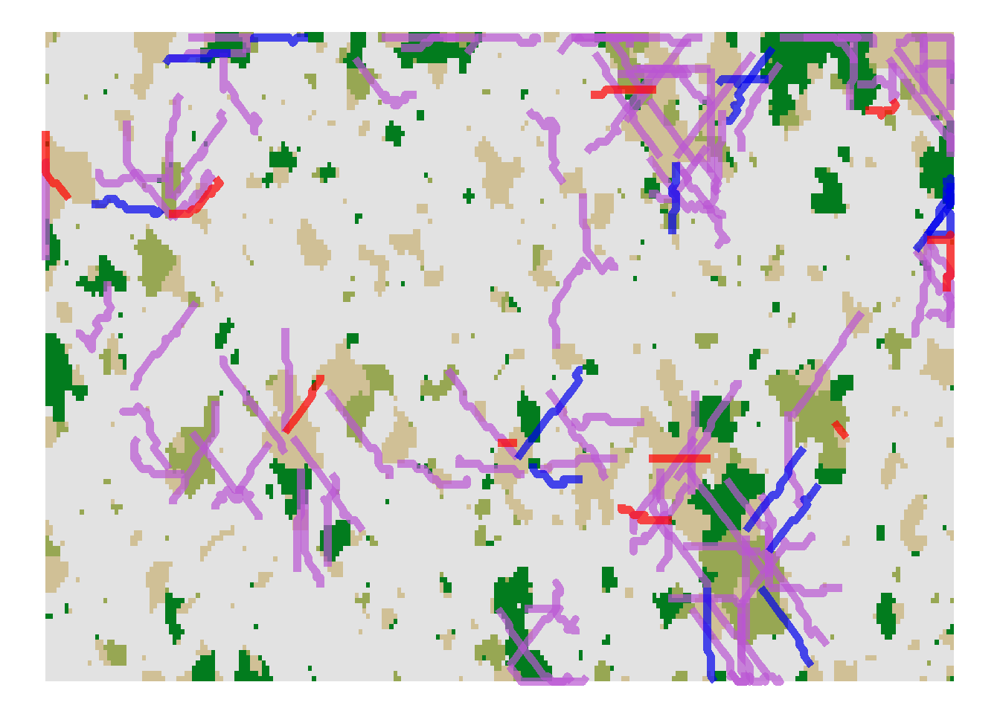
The blue paths indicate successful dispersal events, the purple paths indicate individual dispersal events that paused due to the maximum numbers of steps per year and will continue in the following year (which we have not logged), and the red paths indicate unsuccessful dispersal events where the individuals died during dispersal.
Let’s compare to the movement paths after road construction.
# find all dispersing individuals during last 10 years of road scenario
steps_map4 <- subset(steps, Year >= 190)
Inds <- subset(steps_map4, Status == 0, select = IndID) # Trajectory contains start of path
# trajectory is completed within one year if it starts with status 0 and ends with status 4 or greater
Inds_outcome <- sapply(Inds$IndID, function(Ind){
steps_i <- subset(steps_map4, IndID == Ind)
outcome = steps_i$Status[nrow(steps_i)]
if(outcome %in% c(2,3) ) "wait" else {
if(outcome %in% c(4,5) ) "settle" else {
if(outcome>4) "die"
}
}
})
Inds <- data.frame(IndID = Inds, Outcome = Inds_outcome)
# load raster of first map
map4 <- raster(paste0(dirpath,"Inputs/",landnames[4]))
# multiply x and y counts by map resolution
steps_map4[,c(4,5)] <- steps_map4[,c(4,5)]*res(map4)
pathplot_2 <- levelplot(map4, margin=F, scales=list(draw=FALSE),
col.regions = mycol_terrain,
at = 0:land@Nhabitats, colorkey=F) +
xyplot(y ~ x , data=steps_map4[steps_map4$IndID %in% Inds[Inds$Outcome=="wait",1],], groups = IndID, type="l", col = "mediumorchid", alpha = .7, lwd=2) +
xyplot(y ~ x , data=steps_map4[steps_map4$IndID %in% Inds[Inds$Outcome=="settle",1],], groups = IndID, type="l", col = "blue2", alpha = .7, lwd=2) +
xyplot(y ~ x , data=steps_map4[steps_map4$IndID %in% Inds[Inds$Outcome=="die",1],], groups = IndID, type="l", col = "red", alpha = .7, lwd=2)
# plot before and after road construction
grid.arrange(pathplot_1,pathplot_2, ncol=1)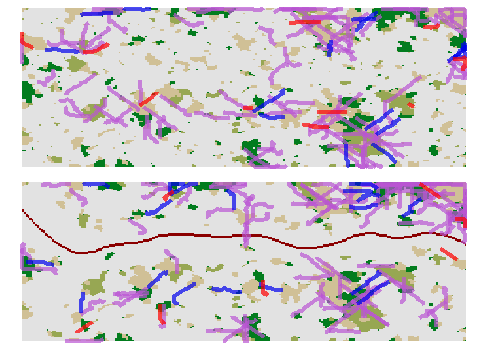
From the paths file, we can easily summarise the dispersal outcomes over all years:
hist(steps$Status[steps$Status>3], breaks = 3:9+0.5,
main = "Dispersal Outcomes",
xlab = "Status code")
In our example, the numbers of dispersal events that ended successfully with settlement is lower than the number of dispersal events that ended unsuccessfully with death.
# successful dispersal events recorded during simulation
sum(steps$Status==4)## [1] 747# unsuccessful dispersal events
sum(steps$Status >4)## [1] 824Obviously, the above plots and numbers only summarise the dispersal paths of a single replicate run.
To summarise the dispersal pathways and outcomes over all replicate simulations and for different time slices (e.g. representing the different landscapes), we need to do a bit more complex number crunching.
# prepare a matrix with rows corresponding to the potential dispersal status and columns corresponding to the time periods (the four different landscapes)
steps_sum <- matrix(rep(0,10*length(year_blocks)), nrow=10)
rownames(steps_sum) <- 0:9
# prepare a named vector for the dispersal status
null_tb <- rep(0,10)
names(null_tb) <- 0:9
# loop through all simulation replicates
for(i in 0:(s@simul@Replicates-1)){
# read in the movement paths for the replicate
steps <- read.table(paste0(dirpath,
"Outputs/Batch",s@control@batchnum,
"_Sim",s@simul@Simulation,
"_Land",s@land@LandNum,
"_Rep",i,
"_MovePaths.txt"),
header = T)
# count for each time period how often we logged the different dispersal statuses
steps_y <- sapply(seq(length(year_blocks)), FUN = function(y){
# empty vector for dispersal status
tb <- null_tb
# the starting year of the time period
lo <- year_blocks[y]
# get the number of instances/steps with different dispersal statuses for the time period
if (y==length(year_blocks)) tb_n <- table(subset(steps, Year >= lo, select = 'Status'))
else {
up <- year_blocks[y+1]
tb_n <- table(subset(steps, Year >= lo & Year < up, select = 'Status'))
}
# assign the instances/steps to the empty vector of dispersal status and return that vector
ix <- names(tb) %in% names(tb_n)
tb[ix] <- tb_n
tb
})
# sum up the counts over all replicates
steps_sum <- steps_sum + steps_y
}
# mean counts over replicates
steps_sum <- data.frame(steps_sum / s@simul@Replicates)
# mean dispersal events per year: divide counts by number of years in time period
year_blocks_end <- c(year_blocks,s@simul@Years)
nyear_blocks <- diff(year_blocks_end)
steps_sum <- sapply(1:ncol(steps_sum),FUN=function(i){steps_sum[,i]/nyear_blocks[i]})
colnames(steps_sum) <- landnames
(steps_sum <- data.frame(status = seq.int(0,9) , steps_sum))## status map_01.asc map_02.asc map_03.asc map_04.asc
## 1 0 8.725000 8.7600000 14.0633333 8.425833
## 2 1 248.121250 295.2966667 388.6416667 288.765000
## 3 2 0.000000 0.0000000 0.0000000 0.000000
## 4 3 6.036875 7.1416667 11.1116667 6.684167
## 5 4 3.818125 4.2116667 4.3300000 3.619167
## 6 5 0.000000 0.0000000 0.0000000 0.000000
## 7 6 0.451250 0.7966667 0.8333333 0.870000
## 8 7 1.728750 2.1150000 3.1750000 2.111667
## 9 8 1.408750 1.2516667 1.2300000 1.520833
## 10 9 0.000000 0.0000000 0.0000000 0.000000This data frame contains the mean (over replicates as well as years) counts of the different dispersal status codes for the time periods of the four maps.
We use it to make two plots: Firstly, we create a histogram of the number dispersal starts and the mean number of steps taken per dispersal event. Secondly, we plot the frequency of the various dispersal outcomes per year, again itemised by the four time periods.
plot_steps_sum <- subset(steps_sum, status<2)
# steps taken per dispersal event
plot_steps_sum[plot_steps_sum$status==1,-1] <- plot_steps_sum[plot_steps_sum$status==1,-1]/plot_steps_sum[plot_steps_sum$status==0,-1]
# mean population-specific dispersal starts per year:
# get population size
range_df <- readRange(s, dirpath)
# which stages are dispersing?
disp@Emigration@EmigProb## [,1] [,2] [,3] [,4]
## [1,] 0 0.55 5 1
## [2,] 1 0.45 5 1
## [3,] 2 0.00 0 0
## [4,] 3 0.00 0 0# in our case stage 0 and stage 1 are dispersing- this corresponds to NInd_stage1 and NJuvs in the range output
range_df$disp_stages <- range_df$NInd_stage1+range_df$NJuvs # dispersing stages
# now, we average the number of dispersing individuals per year over all replicates
range_df_disp <- aggregate(disp_stages~Year, data = range_df, FUN = mean)
# as we logged the range file in shorter intervals than the path file, we need to harmonize them:
range_df_disp <- range_df_disp[range_df_disp$Year %in% unique(steps$Year),]
# average individuals per year per time period:
(disp_pop <- sapply(1:4, function(i) {colMeans(subset(range_df_disp,
Year>=year_blocks_end[i] & Year<year_blocks_end[i+1],
select = disp_stages))}))## disp_stages disp_stages disp_stages disp_stages
## 1938.181 2248.550 2152.583 2147.667# get relative number of individuals (per 1000 individuals) starting to disperse
plot_steps_sum[plot_steps_sum$status==0,-1] <- plot_steps_sum[plot_steps_sum$status==0,-1]/disp_pop*1000
plot_steps_sum$status <- as.factor(plot_steps_sum$status)
levels(plot_steps_sum$status) <- c("dispersal starts per 1000 ind.","steps taken per disp event")
ggplot(gather(plot_steps_sum, key = timeperiod, value = N, -status), aes(x=timeperiod, y=N, fill=status)) +
geom_col(position="dodge") +
labs(title="Dispersal starts per year and Steps taken per dispersal event",
subtitle = "mean over years", fill="Status", x="Timeperiod", y="Count")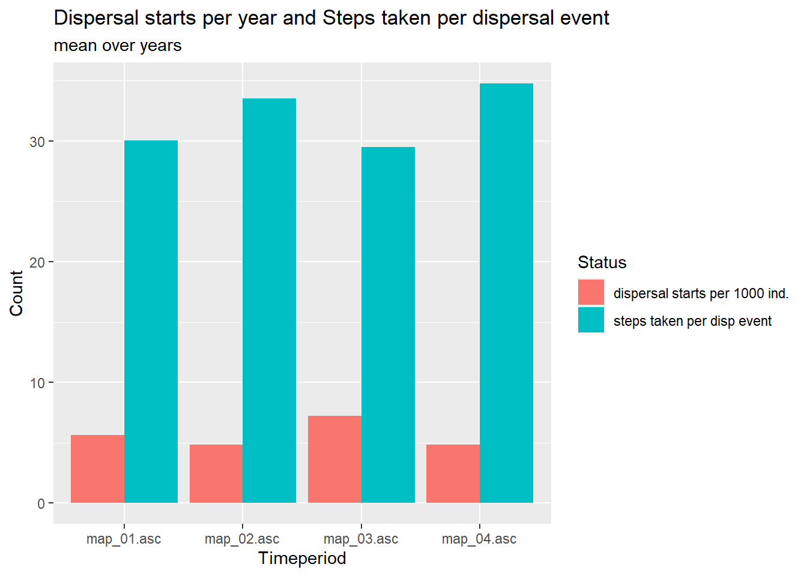
Although the number of individuals in the dispersal stages slightly decreases throughout the simulation (see disp_pop), the number of individuals starting to disperse is highest just before road construction. The number of steps taken per dispersal event are higher after initial clearing of small patches (second time period) and after road construction (fourth time period).
We now assess how dispersal outcomes differed between the different landscapes.
# get averaged dispersal outcomes for the different time periods
plot_steps_sum <- subset(steps_sum, status>3)
# get total number of individuals per recorded year
range_df_adult <- aggregate(NInds~Year, data = range_df, FUN = mean)
range_df_adult <- range_df_adult[range_df_adult$Year %in% unique(steps$Year),]
# average individuals per time period
adult_pop <- sapply(1:4, function(i) {colMeans(subset(range_df_adult, Year>=year_blocks_end[i] & Year<year_blocks_end[i+1], select = NInds))})
for(i in 1:4) plot_steps_sum[,i+1] <- plot_steps_sum[,i+1]/adult_pop[i]*1000
plot_steps_sum$status <- as.factor(plot_steps_sum$status)
levels(plot_steps_sum$status) <- c("settled","settled neighbouring","died: no habitat found","died: step mortality","died: annual mortality","died: max age")
ggplot(data=gather(plot_steps_sum, key = timeperiod, value = N, -status), aes(x=timeperiod, y=N, fill=status)) +
geom_col(position="dodge") +
labs(title = "Dispersal Outcomes per 1000 Individuals per year", subtitle = "mean count over years", fill = "Status", x="Timeperiod", y="Count")
The number of successful settlements are highest in the two middle periods, while the number of deaths is highest while there is the cleared corridor. Throughout, the most common cause of death during dispersal is the step mortality. The failure to find suitable habitat stays equally important over time. Death during the waiting time between two dispersal years is lowest in the mid time periods, which may be explained with the average stage of dispersers.
For a last visualisation, we use the built-in function SMSpathLengths to calculate the distribution of path lengths for the four time periods:
pathlen <- SMSpathLengths(s,dirpath)
head(pathlen)## Map_1 Map_2 Map_3 Map_4
## 1 0.60 0.15 2.10 0.20
## 2 1.15 0.50 1.90 1.00
## 3 2.30 0.75 3.00 1.70
## 4 2.95 1.05 2.90 2.10
## 5 3.55 1.45 2.95 2.15
## 6 3.35 1.20 2.70 2.60This gives a data frame with the frequency of the possible path lengths (measured in number of steps) for each time period in the columns. Let’s plot:
mycol_lines = hcl.colors(length(landnames), palette = "Dark 3")
names(mycol_lines) <- landnames
plot(NULL, xlim = c(0,80), ylim = c(0,150), xlab = "Path length", ylab = "Frequency")
for(n in 1:length(landnames)){
lines(pathlen[[n]], type = "l", col = mycol_lines[n], lwd = 2)
}
legend("topright", legend = landnames, fill = mycol_lines)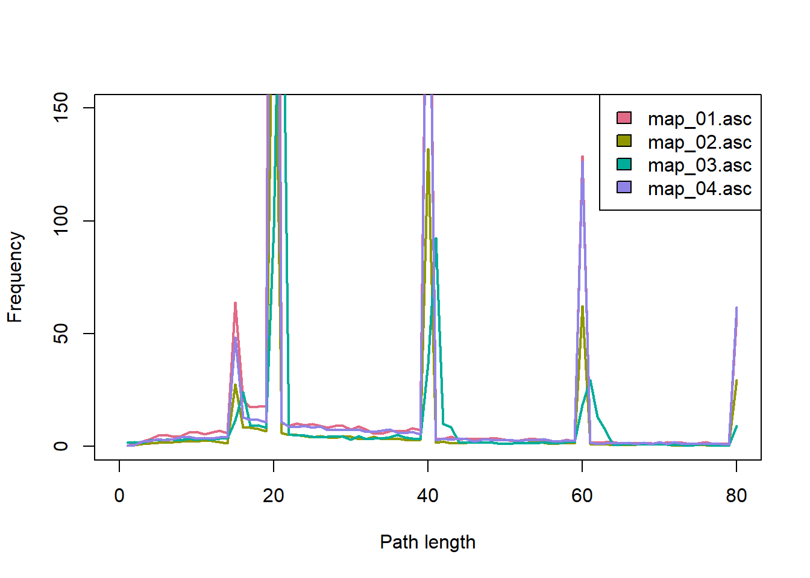
Notice the strong influence of the yearly and total limits on the number of steps. The first peak after 15 steps is caused by the minimum number of steps: Especially in the first time period did many dispersing individuals settle as soon as possible. All paths shorter that 15 steps have resulted in death. We also find that quite a large number of dispersal events spanned several years, especially in the later time periods.
3 Land abandonment scenario
In this scenario, we simulate a cell-based landscape with continuous shifts in the proportional cover of different land use types. We compare two different SMS specifications (the one yielding more directed, the other more random movements) and use the built-in function ColonisationStats() for a quick assessment of the resulting output.
3.1 Artificial Maps
We have created a series of artificial maps (habitat1_1.asc to habitat1_4.asc) using the midpoint displacement algorithm as neutral landscape model (Sciaini et al. 2018). To find out how to make similar maps yourself, please refer to the appendix.
The scenario describes an urbanised landscape that gets abandoned over time. The habitat maps contain the following land cover types:
- urban
- sub-urban
- grassland
- woodland
Let’s first plot all habitat maps together:
nr_dyntimes <- 4 # number of maps
habitat_maps <- stack(paste0(dirpath,"Inputs/habitat1_",seq_len(nr_dyntimes),".asc"))
mycol_terrain <- c("#b02b19","#b8adaa","#cbd48d","#619145")
spplot(habitat_maps,
col.regions=mycol_terrain,
at = (0:4)+.5)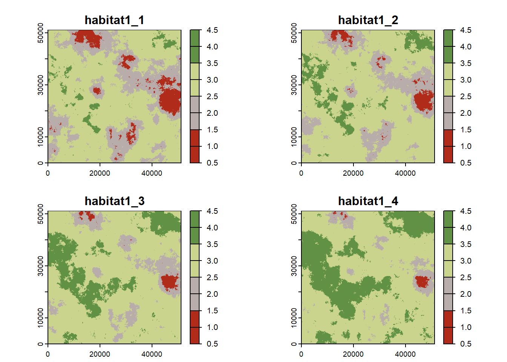
3.2 Simulation
3.2.1 RangeShiftR setup
To use these maps in the simulation, we store their file names in the ImportedLandscape object and set the years at which each should become the current habitat map. Also, we specify the carrying capacities for each land type according to its habitat quality for our modelled woodland species. (Since we will model this species with non-overlapping generations (see below), K_or_DensDep is interpreted as carrying capacities K.)
We simulate the population dynamics with a simple female-only model with non-overlapping generations similar to tutorial 1. To this end, we only set the intrinsic growth rate of the species.
Dispersal is simulated with density-dependent emigration and settlement probabilities. The transfer is modelled using the stochastic movement simulator (SMS) with land cover-specific dispersal resistances (see option Costs). We will compare two different settings of the SMS-module: the first yields more directed movement while the second, in the next section, yields more random movement. For the first case, we set the directional persistence (DP) to have a value of 5 and the dispersal bias (activated with GoalType = 2) to have a strength (GoalBias) and decay rate (AlphaDB,BetaDB) analogous to the road scenario above.
We define the initialisation such that the simulation starts with all suitable cells populated at half their respective carrying capacity K.
landnames <- paste0("habitat1_",seq_len(nr_dyntimes),".asc")
land <- ImportedLandscape(LandscapeFile = landnames,
DynamicLandYears = c(0,70,110,150),
Nhabitats = 4,
Resolution = 100,
K_or_DensDep = c(0,0,1.2,5.5))
demog <- Demography(Rmax = 1.85)
disp <- Dispersal(Emigration = Emigration(DensDep = T,
EmigProb = matrix(c(.72, 12, .2),nrow = 1)),
Transfer = SMS(PR = 3,
DP = 5, MemSize = 3,
GoalType = 2, GoalBias = 2.5,
AlphaDB = .4, BetaDB = 10,
Costs = c(10,4,2,1),
StepMort = .02),
Settlement = Settlement(MaxSteps = 20,
MinSteps = 5,
DensDep = T,
Settle = matrix(c(.8, -12, .6),nrow = 1)))
init <- Initialise(InitType = 0, FreeType = 1, InitDens = 1)
simul <- Simulation(Simulation = 2,
Years = 190,
Replicates = 20,
OutIntPop = 10,
OutIntRange = 5,
LocalExt = T,
LocalExtProb = .2)We can inspect the different model settings visually, for example the density dependence in emigration and settlement probability:
par(mfrow=c(1,2))
plotProbs(disp@Emigration, xmax=1)
plotProbs(disp@Settlement, xmax=1)3.2.2 Run the simulation
After setting all necessary parameters, we can define the parameter master object and run the simulation:
s <- RSsim(seed = 487, land = land, demog = demog, dispersal = disp, init = init, simul = simul)
RunRS(s, dirpath)3.2.3 Results
To get a first impression of our simulation results, we look at the time series for total abundance and the number of occupied cells.
par(mfrow=c(1,2))
plotAbundance(s, dirpath)
plotOccupancy(s, dirpath)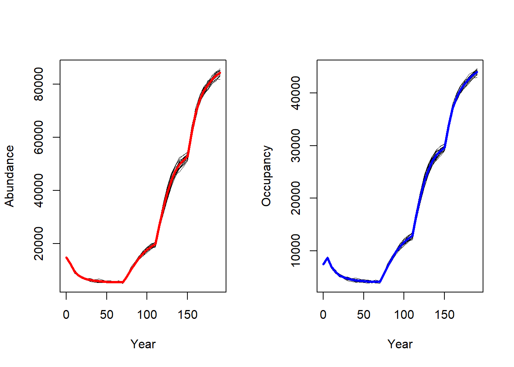
The effect of the landscape changes have a considerable effect on abundance and occupancy.
To get an impression of the spatial occupancy dynamics, we use the function ColonisationStats() to retrieve raster maps of the occupancy probability of selected years. Here, we want to map the last recorded year before the major landscape transitions as well as the time to colonisation for every cell.
# get colonisation stats for different time slices
col <- ColonisationStats(s, dirpath,
years = c(60,100,150,190),
maps = TRUE)
# plot occupancy probability for the different time slices
spplot(col$map_occ_prob, col.regions = hcl.colors(20, palette = "Lajolla", rev = F))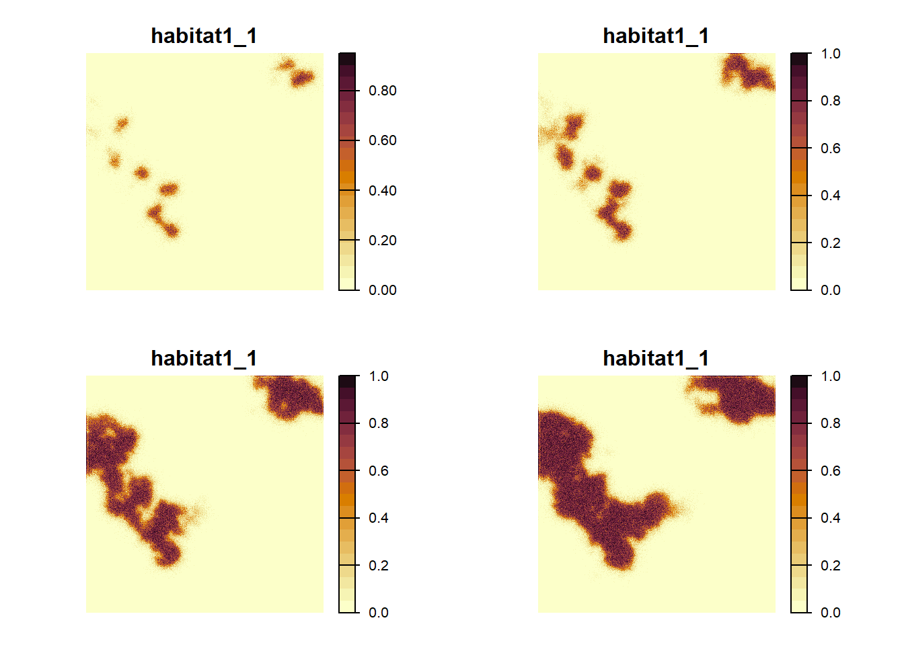
# plot the time to colonisation in years
plot(col$map_col_time)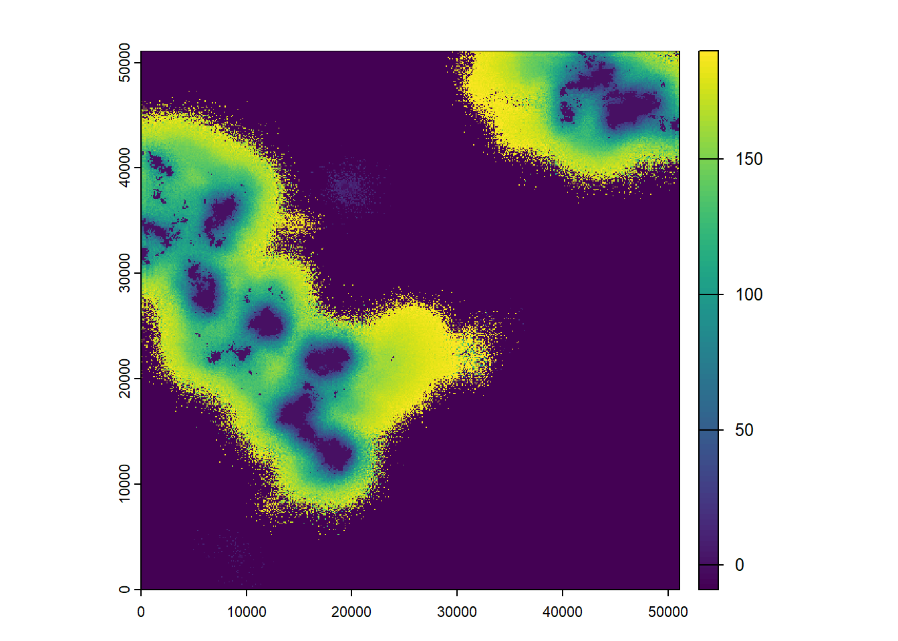
As we can see from these plots, the landscape gets increasingly colonised over the years, as the habitat in the landscape improves for our modelled species.
3.2.4 Modify SMS parameters
For comparison, we run a second simulation with slightly different SMS settings. Some parameters remain the same, such as the perceptional range (PR), the memory size (MemSize), the land cover-specific costs and the per-step moratality. However, we now switch of the dispersal bias and, in fact, use the default values for the directional persistence (DP=1.0) and the dispersal bias (i.e. no bias: GoalType=0). With these default SMS specifications, the movement trajectories resemble random walks, instead of a directed movement.
By adding the new SMS module to the old Dispersal() module, we create a new dispersal object via replacement of its transfer (SMS() here) sub-module. Also, we update the parameter master:
disp2 <- disp + SMS(PR = 3,
MemSize = 3,
Costs = c(10,4,2,1),
StepMort = .02)
s2 <- s + disp2
# change simulation index to avoid overwriting the output files
s2@simul@Simulation <- 4Run the modified simulation:
RunRS(s2, dirpath)We look at the same outputs as above:
par(mfrow=c(1,2))
plotAbundance(s2, dirpath)
plotOccupancy(s2, dirpath)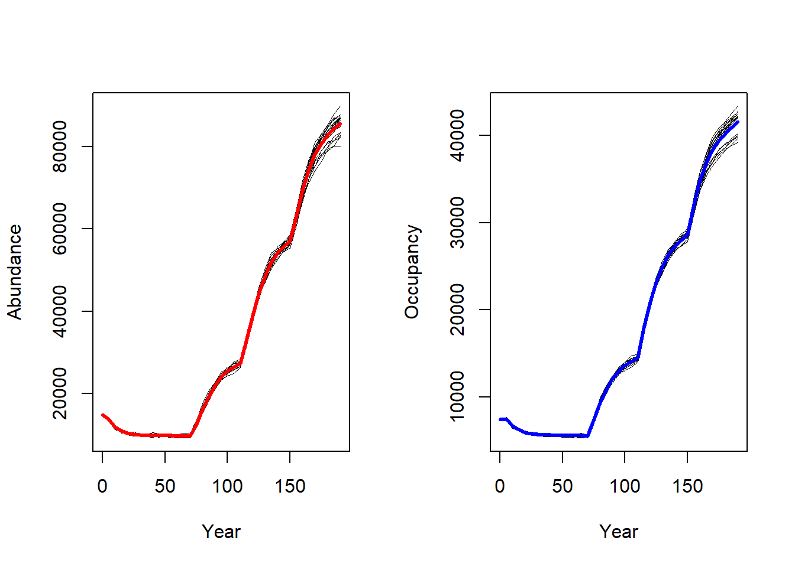
The abundance and occupancy time series haven’t been affected much.
Let’s look at the occupancy probability and time to colonisation using ColonisationStats():
# same code as above:
col2 <- ColonisationStats(s2, dirpath,
years = c(60,100,150,190),
maps = TRUE)
spplot(col2$map_occ_prob, col.regions = hcl.colors(20, palette = "Lajolla", rev = F))plot(col2$map_col_time)We see the same overall pattern as before: The landscape gets increasingly populated over time. To appreciate the difference caused by the modified transfer phase, we need to look at the direct comparison.
3.2.5 Compare both scenarios
We use the objects created above and plot the same maps again, but this time right next to each other to facilitate the comparison.
Compare occupancy probabilities for both scenarios:
maps <- stack(col$map_occ_prob,col2$map_occ_prob)
names(maps) <- c(paste0('Scen.1_Map.',1:4),paste0('Scen.2_Map.',1:4))
spplot(maps,
col.regions = hcl.colors(20, palette = "Lajolla", rev = F),
xlab = "Time periods of changing maps", ylab = "Scenarios")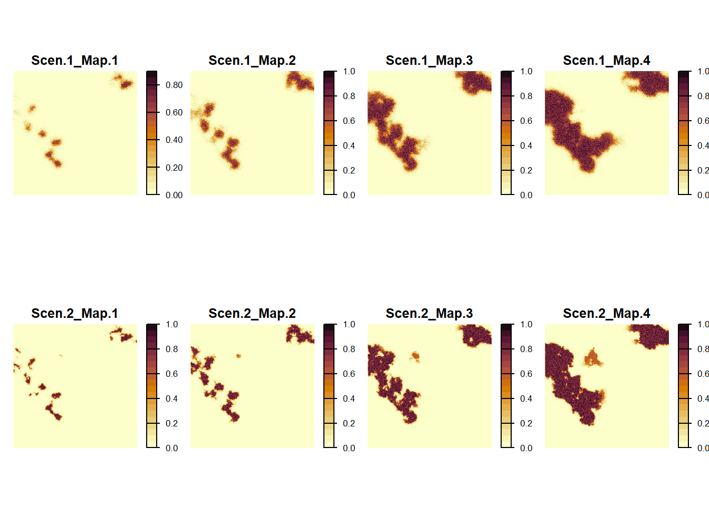
We find that the modelled species manages to colonise newly gained high-quality habitat more quickly in the first scenario using the directed movements and the population is slightly more spread out.
Compare time to colonisation for both scenarios:
maps <- stack(col$map_col_time,col2$map_col_time)
names(maps) <- c(paste0('Scenario.',1:2))
spplot(maps,
col.regions = c('white',terrain.colors(14)),
xlab = "Time to colonisation")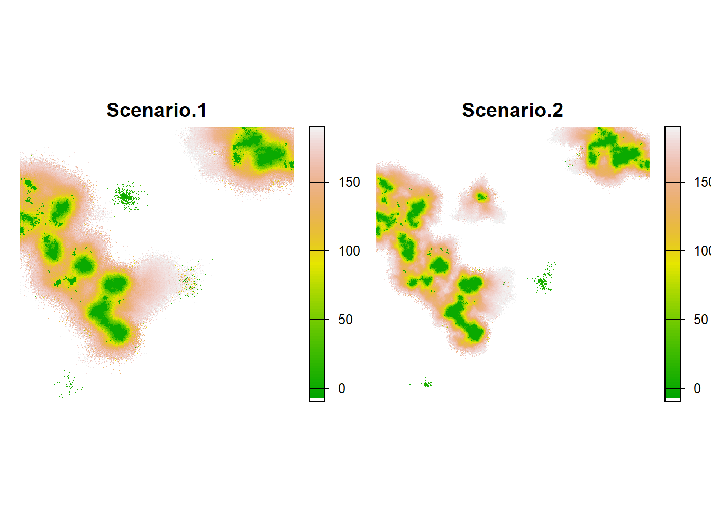
In this plot, the difference doesn’t appear as clearly, but we can still see a faster colonisaton in scenario 1 than in 2.
Sciaini, Marco, Matthias Fritsch, Cedric Scherer, and Craig Eric Simpkins. 2018. “NLMR and Landscapetools: An Integrated Environment for Simulating and Modifying Neutral Landscape Models in R.” Methods in Ecology and Evolution 9 (11): 2240–8. https://doi.org/10.1111/2041-210x.13076.